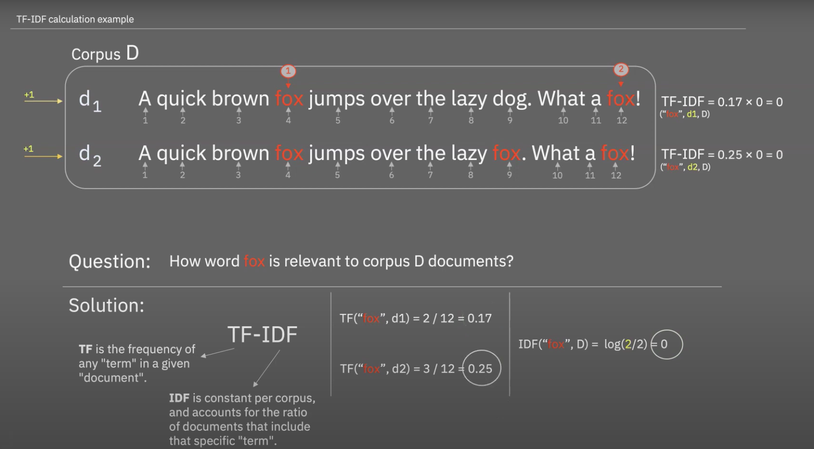

文本分析与会计
数据挖掘一般会遇到两个难题
如何从网络中高效地 采集数据？
批量下载、汇总、清洗、整理
如何从文本数据中抽取文本信息(变量)？
情感、客观性、主观性、偏见

目录
1. 认识Python
- 学Python的n理由
- Python是一门语言
- 数据类型与语法
- 如何写Python代码
2. Text as Data
- 角色-Producer/Receiver
- 机制-Reflects/Impacts
- 目的-Predict/Understanding
- 方法-定性vs定量
- 文本分析的常用指标
3. 文本特征工程
- 词袋法(文档向量)
- 词向量
- 文档向量化
- 词向量
4. 文本分析指标
5. 文本分析应用案例(会计)
1、认识Python

1.1 学Python的n理由
简单
用户多
能做很多有意思的事
自动化办公
- 群发邮件
- 自动生成报表
网络爬虫
- 在线秒杀
- 下载音频、视频pdf报告
- 明星的微博有新消息后邮箱提醒你
数据分析
可视化
机器学习
物联网
制作网站
1.2 Python是一门语言

There is such a number a, if a is greater than or equal to 0, we will print a; if a is less than 0, we will print -a.
1.3 数据类型与语法
| 英语 | Python | 例如 |
|---|---|---|
| 单词 | 数据类型 | 数字、列表、字符串、字典等 |
| 语法 | 逻辑语句 | if条件判断语句、for循环语句等 |
| 数据类型 | 例子 |
|---|---|
| 数字 | age = 25 |
| 字符串 | intro = "Hello, my name is ..." |
| 列表 | my_list = [1, 2, 3] |
| 字典 | ages = {'David': 25, 'Mark':30} |
| 空值 | None |
| 布尔值 | True, False |
1.4 如何写Python代码
实现一定功能, 代码一般由三部分组成
- 数据类型
- 逻辑语句
- 相应功能Python包(库)

x#数据类型ability = 1scale = 1.01records = []
#逻辑语句days = range(1, 365)for day in days: ability = ability*scale records.append(ability) #相应的库 import matplotlib.pyplot as plt%matplotlib inlineplt.figure(figsize=(10, 8))plt.plot(days, records)plt.title('Day day Up in one field!')
二、Text as Data
2.1 角色-Producer/Receiver
文本信息的producer 与 receiver，涵盖 个人、公司(组织)、国家(社会)三个层面。

2.2 机制-Reflects/Impacts
编码解码理论
文化研究之父斯图亚特·霍尔（Stuart Hall）在《电视话语中的编码和解码》（Encoding and decoding inthe television discourse）一文中提出了“编码解码”理论。
- 编码（encoding），信息传播者将所传递的讯息、意图或观点，转化为具有特定规则的代码。
- 解码（decoding），信息接受者，将上述代码按特定规则进行解读。
需要注意的是文本的 反映Reflects 和影响Impacts并不是非此即彼，往往会同时起作用。
| --- | 研究目的 | 自变量 |
|---|---|---|
| Reflects | 文本可以反映producer的一些特质，帮助研究者理解producer。 例如试图挖掘producer的个性personality或隶属于什么社会团体。 | 了解公司的品牌个性； 年报含有未来业绩表现的线索； 消费者们在品牌社区的言语能更深的投射出消费者对品牌的态度； 而更宏大的层面，文本也能反映出文化差异。 了解消费者是否喜欢新产品，消费者如何看待品牌，消费者最看重什么 |
| Affects | 知道文本如何影响receiver，receiver会有什么样的行为和选择。 | 检验文本是否以及如何导致消费者诸如购买、分享和卷入行为。 广告会塑造消费者的消费行为 消费者杂志会扭曲消费者产品分类感知 电影剧本会影响观众的反应 |
2.3 目的-Predict/Understanding
如何使用文本数据
| --- | Reflects | Affects | 目的 | 应用 | 难点 |
|---|---|---|---|---|---|
| Predict | 预测 producer的状态、特性、性格等 | 预测 receiver阅读、分享和购买行为 | 相比搞清楚作用机制(因果关系)，更关心预测的准确性。 | 什么消费者最喜欢贷款; 什么电影会大火; 未来股市走向; | 文本数据可以生成成千上万的特征(相当于变量x1，x2...xn)，而文本数据记录数甚至可能少于特征数。 为了解决这个为题，使用新的特征分类方法，减少特征数量，又有可能存在拟合问题。 |
| Understanding | 为什么当人们压抑的时候会使用特殊人称。 | 来理解为何带有情绪的文本会更容易被阅读和分享 | 理解为什么事情发生以及如何发生的 这类研究往往会用到心理学、社会学的实证方法，旨在理解某个文本特征会导致什么后续结果，以及为什么产生这样的后果。 | 消费者怎样表达会如何影响口碑; 为何某些推文会被挑中分享？ 歌曲为何变火？ 品牌如何让消费者忠诚？ | 找出观测数据背后的因果关系。相应的，该领域的工作可能会强调实验数据，以允许对关键的独立变量进行操作。 另一个挑战是解释文本特征之间的关系。 |
2.4 方法-定性/定量
经过刚刚定量技术的介绍，现在对定性与定量粗略做个对比。
| 定性/量 | 分析方法 | 优点 | 缺点 |
|---|---|---|---|
| 定性（text as text） | 质性（扎根） | 依靠研究者领域知识，可以对少量的数据做出深刻洞见。 | 难以应对大规模数据； 编码过程并不能保证唯一； |
| 定量 textual data(text as data) | 明显的文本特征，如词频、可阅读性 | 标准如一; 适合大规模文本挖掘； 纷繁复杂中涌现出潜在规律 | 需要破坏文本的结构，丧失了部分信息量 |
2.5 文本指标
词典法，对某个词、某类词(词典)的统计个数多少，。特点容易理解，简单，实施性强。
数量； 如文本长度(e.g., Godes and Mayzlin 2004; Moe and Trusov2011)
主观性； 情感得分，情感词词典(e.g., Godes and Silva 2012; Moe and Schweidel 2012; Ying, Feinberg and Wedel 2006)·
客观性，如方差、信息墒(e.g., Godes and Mayzlin 2004).
- A
产品不错， 包装破损， 态度很好， 综合还是推荐大家购买![5,1,5,4] - B
产品垃圾，使用垃圾， 包装破损， 差评!![1, 1, 1, 1] - A的方差更大，信息量更客观公正。
- A
实体词词频； 例如“电脑”商品的在线评论中“电脑”出现次数会远多于其他词。
可读性；阅读难易程度，根据词典或词的字母数测量
不确定性；经济政策不确定性词典
偏见，态度；将每个词看做向量，对向量进行计算
三、文本特征工程
3.1 文档向量化
3.1.1 词袋法
以词典法(语料中所有词均列入词典)为基础，文档向量化

3.1.2 one-hot
与词袋非常类似的算法还有one-hot

3.1.3 tf-idf
不止考虑出现次数，还要考虑词语出现场景的可诊断性



3.2 词向量
xxxxxxxxxxDocs =["Mom is a happy woman", "Dad is happy.!"]词典中带顺序[Mom, is a happy woman dad]
| 技术 | 技术 | 维度类比 | 任务 | 例子 |
|---|---|---|---|---|
| 字典法（词频） | 数个数 | 原子 | 统计每句话里的名词个数 | sent_num1 = 2 sent_num2 = 1 |
| 词袋法 | bag of words one-hot Tf-idf | 分子 | 转化为词向量, 计算两个句子相似度。 | vec1 = [1, 1, 1, 1, 1, 0] vec2 = [0, 1, 0, 1, 0, 1] similarity = cosine(vec1, vec2) |
| 词嵌入 | word2vec、 glove等 | 中子、质子、电子 | 词语相似度。(语义上大小相近，方向相反) | mom = [0.2, 0.7, 0.1] dad = [0.3, 0.5, -0.2] |
有意思的是，词嵌入Embeddings，尤其是glove，通过一定的向量化运算，可以挖掘出人类留下的认知信息，如态度、偏见等。词嵌入模型训练的方式不同，能做不同的计算。

3.2.1 按群体
将数据按照producer划分，对每类producer的文本数据分别训练词嵌入模型


3.2.2 按时间
将时间分为不同时间段，对每个时间段内的文本数据分别训练词嵌入模型

四、技术对比
从左向右，自动化程度越来越高； 相对而言， 后期人工介入的越来越少。
| 技术 | 描述 | 优点 | 缺点 | 应用领域 | Python包 |
|---|---|---|---|---|---|
| 主题分析 | 人工编码 | 使用参与者自己的话语或者构念来挖掘数据，对少量文本理解的更深入 | 属于时间、劳动密集型任务，不适合大规模数据。 由于不同的编码人员有不同的经历和偏好，编码过程的标准不可靠 | 社会学、管理学 | |
| 字典法 | 统计文本中词语的出现个数(占比) | 允许对研究的数据进行定量分析，有标准，规格唯一 | 采用的词典应尽量与研究问题适应，词典适配性问题突出。情感分析，形容词词典。 | 管理学 | jieba |
| 词袋法 | 文本向量化 | 编码标准稳定简单，扩展性强 | 编码过程忽略词语的先后顺序；舍弃了一些信息量 | 管理学 | jieba scikit-learn |
| 监督学习 | 文本分类 | 允许事先定义编码规则；逻辑简单 | 需要高质量的标注数据(工作量大)；特征词太多，训练的模型很容易过拟合。 | 计算机学、政治学、管理学 | scikit-learn |
| 无监督学习 | 主题建模 LDA话题模型 | 在没有人工标注的情况下，加速了数据的“标注”或“分类” | “标注”是机器按照数字特征进行的分组，需要研究者解读才可以赋予“标准“意义；训练过程需要大量的调参 | 计算机学、政治学、管留学 | scikit-learn |
| 自然语言处理 | 考虑词语上下文语境顺序，word2vec、glove等 | 计算机自动化；可分析语义 | 大多数模型是人类无法解读的黑箱； 虽然代码编程量小，但训练代码耗时巨大 | 计算科学；市场营销；心理学 | gensim 等 |
五、文本分析论文解读
应用
| 论文 | 定性 | 词典 | 向量 |
|---|---|---|---|
| 胡楠, 薛付婧 and 王昊楠, 2021. 管理者短视主义影响企业长期投资吗———基于文本分析和机器学习. 管理世界, 37(5), pp.139-156. | Y | Y | |
| Cohen, L., Malloy, C. and Nguyen, Q., 2020. Lazy prices. The Journal of Finance, 75(3), pp.1371-1415. | Y | Y | |
| 王伟, 陈伟, 祝效国 and 王洪伟, 2016. 众筹融资成功率与语言风格的说服性--基于 Kickstarter 的实证研究. 管理世界, (5), pp.81-98. | Y | Y |

文本(数据)分析步骤
| 步骤 | 任务 | Python |
|---|---|---|
| 1. 研究问题 | Produce/Receive 、 Reflects/Impact 管理层短视特质x -> 企业资本支出和研发支出y | |
| 2. 数据收集 | 巨潮资讯网； 所有 A 股； 2007~2018 年年度财务报告文件 | Python网络爬虫 |
| 3. 设计构念 | 短视主义词有哪些 训练word2vec模型，找到”尽快“近义词， 如、”尽早“、”抓紧“、”力争“、”加紧“ | word2vec |
| 4. 测量构念 | 统计不同年报中MD&A中的短视主义词出现占比 | 词典法 |
| 5. 计量建模 | 计算 x 与y之间的关系 |
相关文献
冉雅璇,李志强,刘佳妮,张逸石.大数据时代下社会科学研究方法的拓展——基于词嵌入技术的文本分析的应用.南开管理评论1-27
沈艳, 陈赟, & 黄卓. (2019). 文本大数据分析在经济学和金融学中的应用: 一个文献综述. 经济学 (季刊), 18(4), 1153-1186.
Berger, J., Humphreys, A., Ludwig, S., Moe, W.W., Netzer, O. and Schweidel, D.A., 2020. Uniting the tribes: Using text for marketing insight. Journal of Marketing, 84(1), pp.1-25.
Kenneth Benoit. July 16, 2019. “Text as Data: An Overview” Forthcoming in Cuirini, Luigi and Robert Franzese, eds. Handbook of Research Methods in Political Science and International Relations. Thousand Oaks: Sage.
Anand, V., Bochkay, K., Chychyla, R. and Leone, A.J., 2020. Using Python for text analysis in accounting research. Vic Anand, Khrystyna Bochkay, Roman Chychyla and Andrew Leone (2020)," Using Python for Text Analysis in Accounting Research", Foundations and Trends® in Accounting, 14(3-4), pp.128-359.
Cohen, L., Malloy, C. and Nguyen, Q., 2020. Lazy prices. The Journal of Finance, 75(3), pp.1371-1415.
胡楠, 薛付婧 and 王昊楠, 2021. 管理者短视主义影响企业长期投资吗———基于文本分析和机器学习. 管理世界, 37(5), pp.139-156.
王伟, 陈伟, 祝效国 and 王洪伟, 2016. 众筹融资成功率与语言风格的说服性--基于 Kickstarter 的实证研究. 管理世界, (5), pp.81-98.
Banks, George C., Haley M. Woznyj, Ryan S. Wesslen, and Roxanne L. Ross. “A review of best practice recommendations for text analysis in R (and a user-friendly app).” Journal of Business and Psychology 33, no. 4 (2018): 445-459.
Cohen, L., Malloy, C. and Nguyen, Q., 2020. Lazy prices. The Journal of Finance, 75(3), pp.1371-1415.
徐巍,姚振晔,陈冬华.中文年报可读性：衡量与检验[J].会计研究,2021(03):28-44.